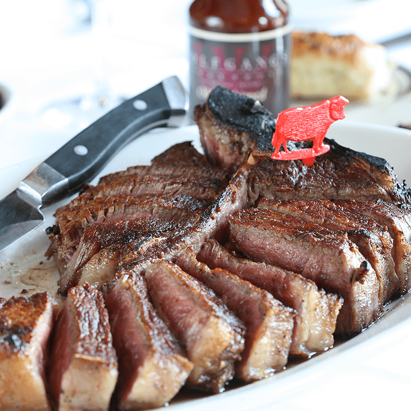
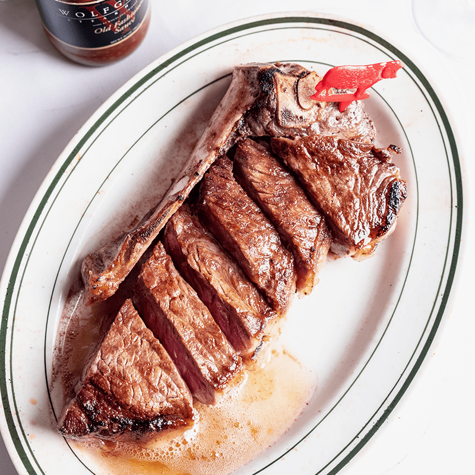

Welcome to Wolfgang's Steakhouse!

Porterhouse Steak
USDA Prime Porterhouse, Dry-Aged in our own aging box.

Grilled Salmon
Salmon Grill.

Filet Mignon
USDA Prime, Wet-Aged in our own aging box.

Prime NY Sirloin Steak
USDA Prime, Dry-Aged in our own aging box.